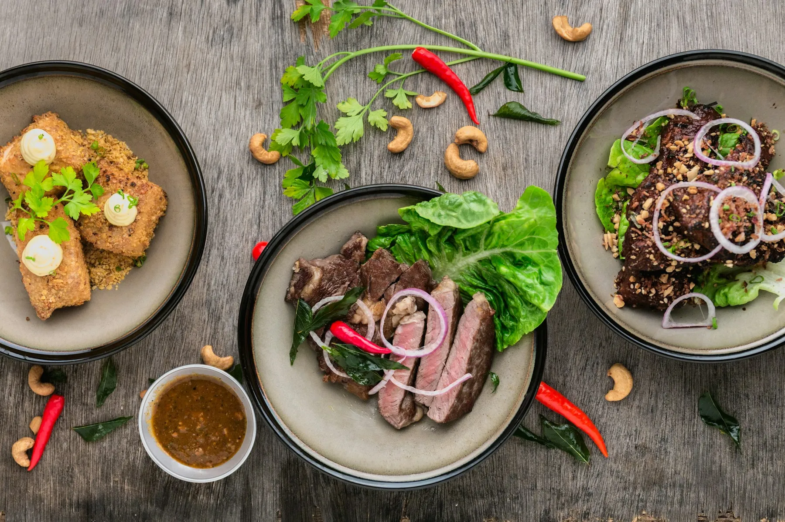
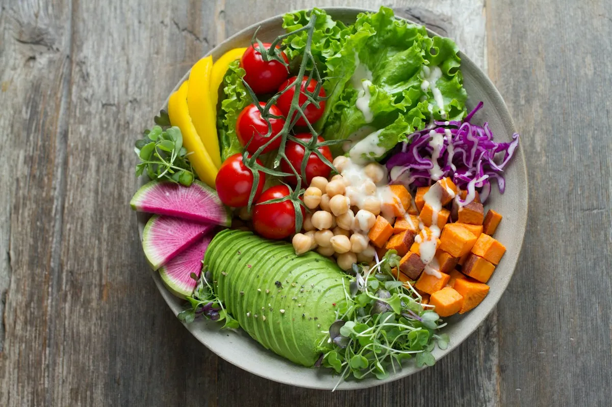
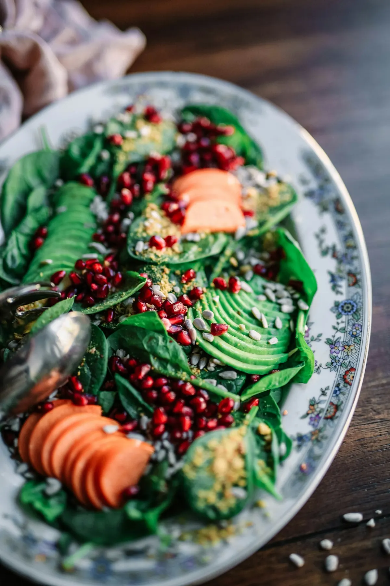
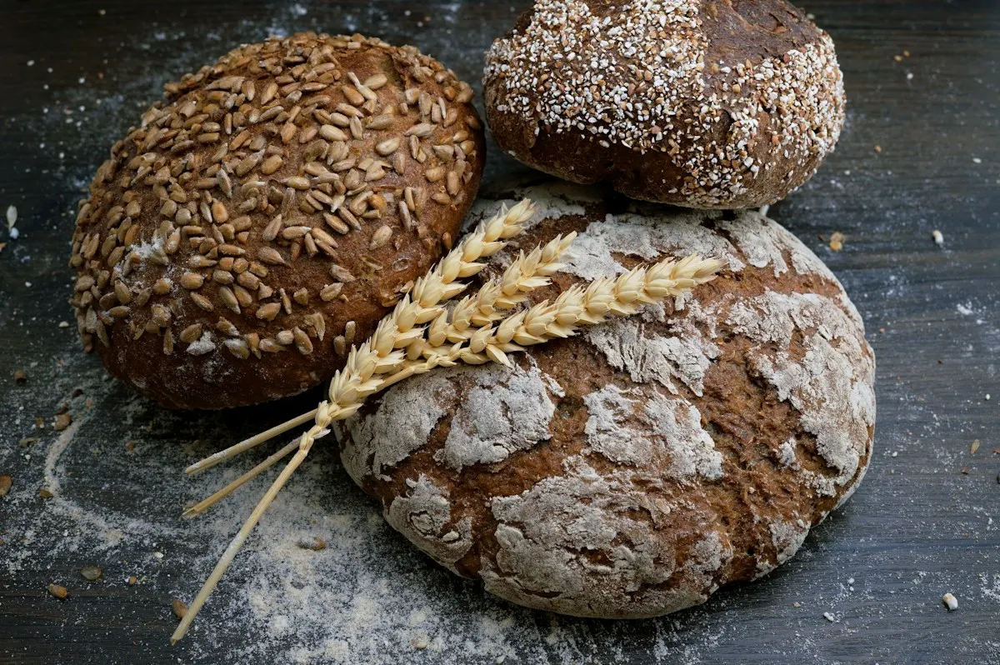
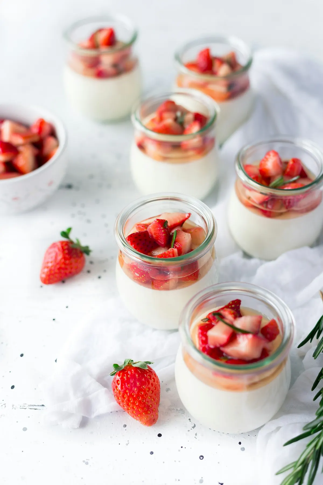

MESÓNEL BOSQUE
CÁDIZ, ANDALUCÍA
CÁDIZ, ANDALUCÍA
Mesón EL DUQUE
La mesa es el punto de encuentro.CALLE HUELVA, S/N

¿Nos vemos
en El Bosque?
UNA MIRADA GASTRONÓMICA
Primero,
por los ojos.
Color, detalles y ganas de comer.
Un pequeño aperitivo visual.
Composición ilustrativa. Estas fotografías no muestran platos ni espacios de Mesón El Duque.



EN LA MESA
Un rato
para disfrutar.
Compartir la mesa.
Alargar la conversación.
Hacer una pausa.

CALLE HUELVA, S/NAquí,
Aquí,
en El Bosque.
EL MESÓN
El Duque.
Así de sencillo.
Mesón El Duque está en Calle Huelva, en el casco urbano de El Bosque, Cádiz.
¿Preparando tu visita? Llámanos para consultar horarios y disponibilidad.
956 71 62 26VEN A VERNOS